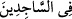
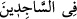

 sözünün mânâsı, cemaatle namaz kılanlar arasında demektir. Asıl mânâ ise
şöyle olur: O seni yalnız başına namaza kalktığın zaman gördüğü gibi cemaatle namaz
kılanlarla beraber namaz kıldığın zaman da görür.
et-Te’vîlâtü’n-Necmiyye’de der ki: “O ki, (gece namaza) kalktığın zaman seni
görüyor.” Yâni bütün işler için kalktığın zaman senin maksadını, niyetini ve azmini
görür. Allah Teâlâ Peygamberini (s.a.), bu âyet ile halkı müşâhededen çekip ayırdı.
Çünkü kendisinin Hakk’ın huzurunda olduğunu bilen kimse Hak ile olan hallerinin
inceliklerine ve durumlarının gizliliklerine riâyet eder. “Secde edenler arasında
dolaşmanı da (görüyor).” sözüyle de kendisini gördüğünü haber vererek ibadetlerin
meşakketlerini ona kolaylaştırdı. Mevlâsı ve Mahbûbu tarafından görüldüğünü bilen
kimseye meşekkat yoktur. Sarsılmaz/yüce dağları yüklense bile Rabbinin
müşâhedesinde onları taşımak ona göz kapağındaki bir kıl kadar hafif gelir.
Denilir ki: Her secde edenin rûhunu senin rûhundan yaratmamız sebebiyle ruhlar
âleminde sen secde edenler arasında dolaştığın zaman bizim gözümüz önünde idin.
“Çünkü her şeyi işiten,” ezelde senin, “Ben Âdem oğullarının efendisiyim, fakat
övünmek yok” sözünü işiten O’dur. Çünkü onların ruhları senin ruhundan yaratıldı. “her
şeyi bilen O’dur.” Bu ikram ve ihsanı hak ettiğini bilen O’dur.”
“Secde edenler arasında dolaşmanı da (görüyor).” âyeti hakkında İbn Abbas
(r.anhümâ)’nın şöyle dediği rivâyet edilmiştir: “Yâni seni peygamber olarak çıkarana
kadar bir peygamberden diğer peygambere nakledilerek dolaşmanı görüyor.” Buna göre
in mânâsı, ‘Annesi O’nu dünyaya getirene kadar Âdem’den Nûh’a, sonra
İbrâhim’e, ardından ondan sonraki nebîlerin ve rasullerin sulblerinde dolaşmanı da
görüyor’ demektir. Babalarının arasında peygamber olmayanların bulunması da buna
ters düşmez. Kasdedilen O’nun nesebinde peygamberlerin bulunmasıdır.
Râfızîler, bu âyeti Hz. Peygamber (a.s.)’ın babalarının mü’min olduklarına delil
saymıştır. Çünkü secde eden ancak mü’mindir. Îman, secde ile ifâde edilmiştir. Bu,
zâhirî bir istidlâldir. Rasûlullah (s.a.)’in “Ben, temiz kimselerin sulblerinden temiz
kadınların rahimlerine nakledilmeye devam ettim.”[35] hadîs-i şerîfi, îmâna değil
Câhîliye devrinde kıyılan nikâhların sıhhatine delâlet eder. Nitekim Hz. Peygamber
(a.s.) diğer bir hadîste şöyle buyurmuştur: “Nihâyet beni asla zinâ karışmayan anne-
babamdan çıkardı.”[36] Bu konuyla ilgili bir miktar mâlumat İbrâhim sûresinin
sonlarında geçmişti.
Müslümana gereken, Peygamberimiz (a.s.)’ın nesebinin şerefine halel getirecek
sözlerden dilini tutmak, onda eksiklik bulunduğunu akla getirecek, özellikle avâma
vehmettirecek şeylerden sakınmaktır.
Eğer: “Hz. Peygamber (s.a.)’in ataları hakkında nasıl inanacağız?” dersen, şöyle
cevap veririm: Bu konu, îtikadî konulardan değildir. Onun için kalbin bunda bir payı
yoktur. Dilin payına gelince onu zâten zikrettik.